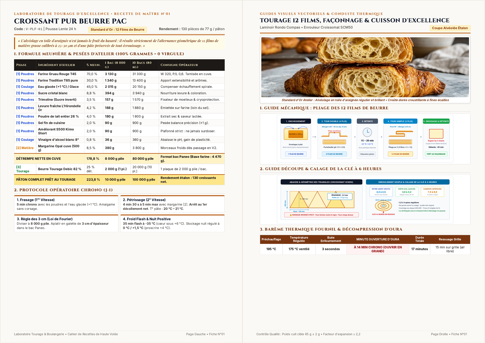
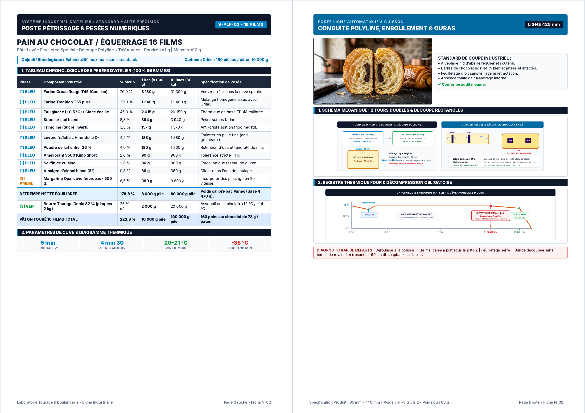
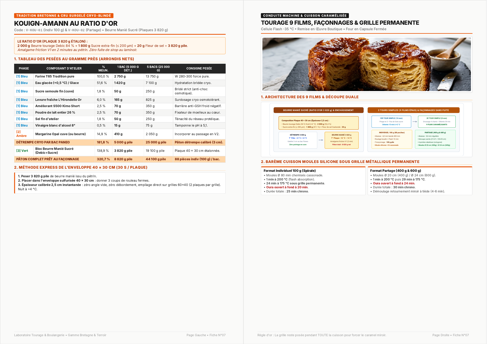

Conception d'excellence à double page face-à-face : la page de gauche régit les pesées 100 % en grammes et le pétrissage, la page de droite orchestre les schémas vectoriels de tourage, la découpe au millimètre et la photographie macro étalon.
Comprend la Couverture Officielle rigide et les 3 Doubles Pages complètes (Croissant 12 films, Pain Chocolat 16 films, Kouign-Amann Ratio d'Or).
Typographie Didone / Serif d'exception, fond ivoire délicat, rehauts d'or cuit et filets d'orfèvre.

Typographie technique sans-serif géométrique, ardoise sombre, bleu industriel, contrastes intenses pour le fournil.

Sobriété contemporaine, noir anthracite minéral, accents caramel cuit et cuivre chaleureux.
